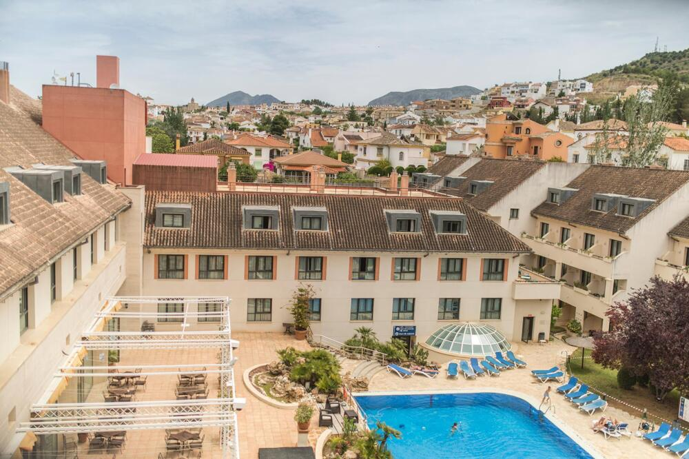
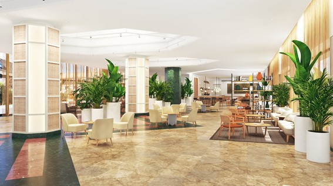

BIENVENIDO A HOTEL ANTEQUERA GOLF
El Hotel Antequera Hills es un hotel original y versátil, capaz de adaptarse a las necesidades de cada huésped.
Familias con niños que quieran descubrir el entorno natural de esta ciudad monumental del centro de Andalucía, empresas, parejas o grupos de amigos que deseen regalarse un fin de semana diferente.
Todos tienen un lugar en nuestro hotel en Antequera. Disfrute del máximo confort de un hotel en Antequera, con una atención siempre amable y profesional, y relájese en nuestras instalaciones.
Elija un alojamiento capaz de hacer que todas las estancias sean totalmente personalizadas y aproveche todos sus servicios: restaurante buffet, piscina, golf, pistas deportivas, wifi gratis, parque infantil y animación, todo cerca del Caminito del Rey.
Haga su reserva en un par de clics y disfrute de un hotel en Antequera con campo de golf y espacios adaptables para la celebración de eventos, al precio más económico disponible.
Garantizado y en exclusiva, sólo reservando desde aquí: la web oficial de Hotel Antequera GOLF.

